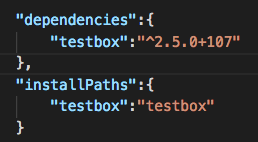
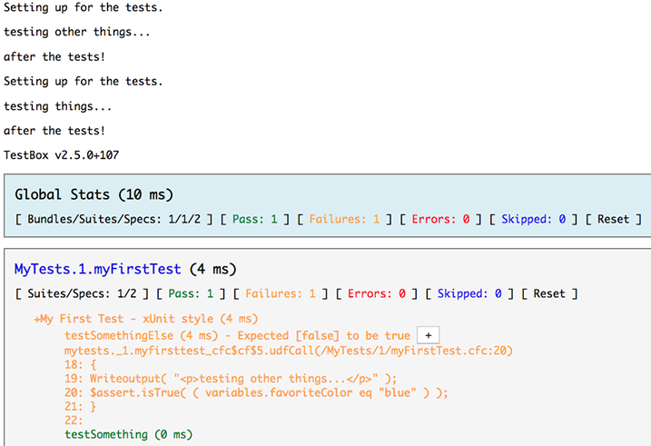

Testing My Non-ColdBox Site With TestBox
Nolan Erck
South of Shasta Consulting
About Me
- Software Consultant (southofshasta.com)
- Software Development, Training, Design
- ColdFusion, C++, Java, SQL, HTML/CSS, Angular, Vue, React, PHP, etc...
- Manager of SacInteractive User Group
- Reformed Video Game Developer (Grim Fandango, SimPark, StarWars Rogue Squadron, etc).
- Music Junkie
Slide deck and code samples are here:
github.com/nolanerck
testbox-for-non-coldbox-cfml
Today's Agenda
- Testing and Misconceptions
- TestBox Misconceptions
- How to install, start using TestBox?
- Code Samples
- Other Resources
Testing
- Everyone knows they should test their code.
- But where do you start?
- Manually via a co-worker down the hall?
- Do we have an official QA team?
- Are they white box or black box QA?
- Do we even know the difference?
What / Where Do We Start Testing?
- Many different types of testing, many layers.
- UI / UX?
- Form submissions? With and without client-side validation turned on?
- Database queries?
- Other business logic?
- So many things!!!
Testing and Misconceptions
- "Testing is the QA department's job."
- That's no reason to write broken code.
- We all benefit from more types of testing!
- Human QA is beneficial, no matter how many automated tests we have.
Accessibility cannot be 100% tested via automation.
Testing and Misconceptions
- "Writing tests slows us down, takes too long."
- Maybe at first, or later in a project's lifecycle.
- It's a new discipline, takes time to learn.
- But does help everyone.
- Writing tests gets easier (and quicker) the more you do it.
Different Types of Testing
- Unit
- UI/UX
- Integration
- Regression
What Is TestBox?
- CFML testing framework for automating testing
- Supports BDD and xUnit style testing
- Free and open source
- Works on both ACF and Lucee
TestBox Misconceptions
- "It's a testing framework, so I have to rewrite my entire app."
- Nope! Leave your code as-is*.
- Testing frameworks != MVC frameworks
- TestBox lives in its own folders, separate from your app
*Your mileage may vary.
TestBox Misconceptions
- "It's a 'Box' thing, therefore it requires ColdBox"
- Nope again!
- TestBox is a self-contained project,
totally separate from ColdBox
- (Though it does come with ColdBox if you're using that)
TestBox Misconceptions
- "I bet this is super hard to install and configure"
- Nope again again!
- Install CommandBox
- Type "box install testbox"
- Boom, done.
TestBox Misconceptions
- "My app is older. We're not using OOP. This won't work for me."
- Nope x 3!
- The more modular / encapsulated your code is, the better
- But doesn't have to use OOP
- Today's demo uses no CFCs at all, no frameworks either
Okay so I've installed TestBox. Now What?
- Start testing!
- Pick a folder, write some Test CFCs
- Use the Test Runner to see the results
CommandBox
- Useful for all CFML projects
- Both old and new apps benefit
- Legacy, OOP, and in between
- The "Node.js" for CFML
TestBox in the box.json file

So How Do You Write A Test?!
- Well, what does your app do?!
- These are "Unit Tests"
- We're testing the individual units of business logic.
How Do I Run The Tests?
- Default way:
http://sitename/testbox/tests/runner.cfm
- Tests live in /testbox/tests folder
Sample Test File Results

Things to Keep In Mind
- Legacy apps can be tested.
But the better your app is structured, the easier it is to test.
- TestBox 2.x supports older versions of CF than 3.x
Other Resources
- testbox.ortusbooks.com
- Ortus Website
- OrtusSolusions Slack, Google Groups, this conference
- South of Shasta Consulting
Other Resources (cont)
- ValidateThis
- "Automate Thyself", Luis Majano's CF.Objective preso
- "Writing My First Unit Tests With MXUnit And ColdFusion" - Ben Nadel
- Jenkins
- Cypress.io (the new Selenium)
Questions? Comments?
- southofshasta.com
- nolan@southofshasta.com
- Twitter: @southofshasta
- Github: nolanerck
Thanks!